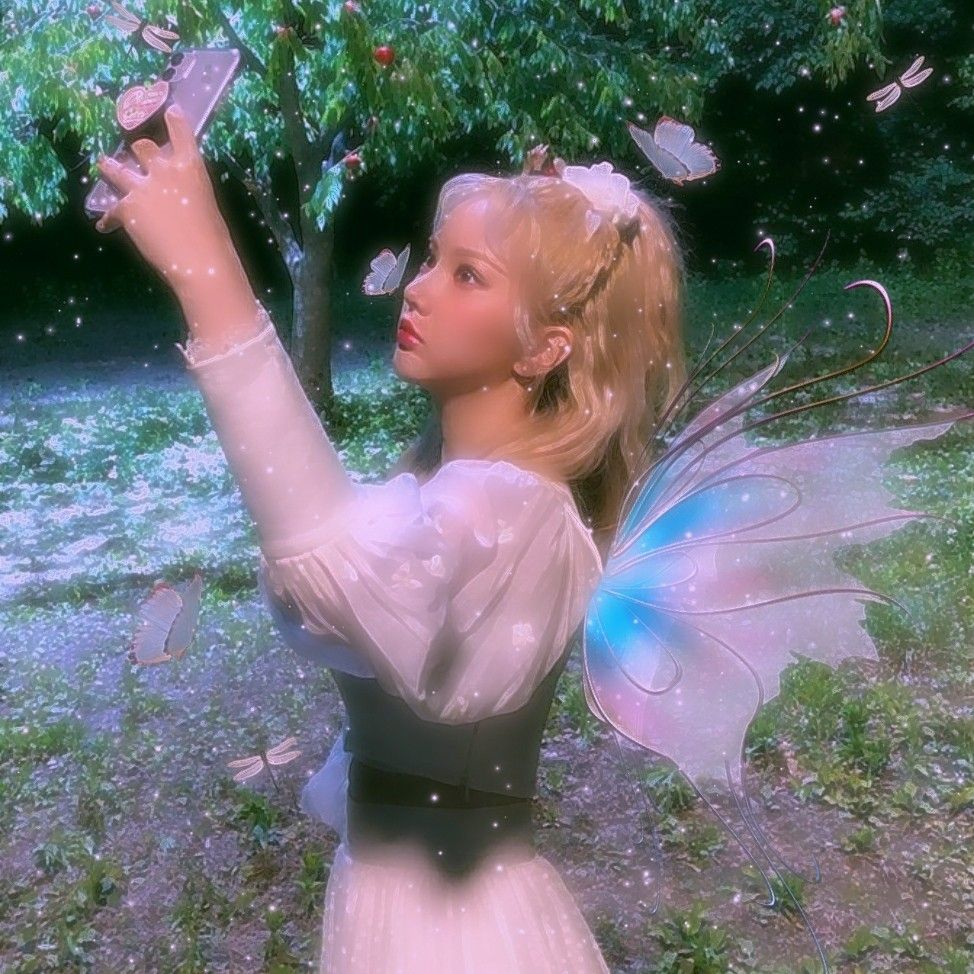
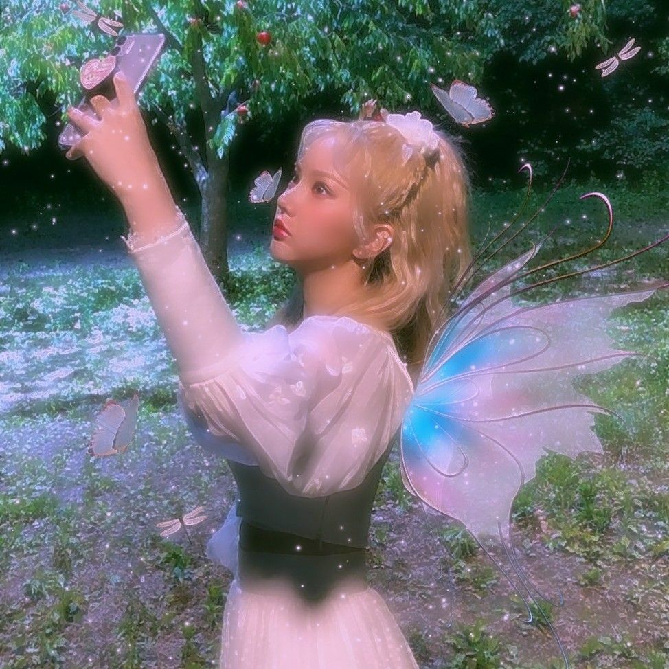
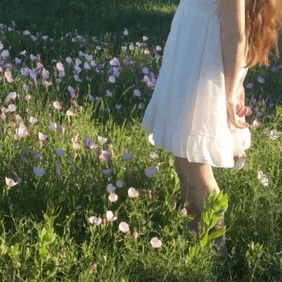

2.THE NATURAL ELEMENT

3.THE TRANSPARENT ELEMENT
5.THE SPARKLING ELEMENT
6.THE RURAL LIFE ELEMENT
<
7.THE ANIMAL LIFE ELEMENT

8.THE SPRING TIME ELEMENT
8.THE FAIRYTALE STORY BOOK ELEMENT

9.THE WHIMSICAL ELEMENT
10.THE UNCANNY ELEMENT
10 INTERACTION DYNAMICS OF THE FAIRYCORE AESTHETIC
1.FLOWERS BLOOMING

2.RAYS OF SUNSHINE DANCING

3.TRANSFORMING

4.FLOWERS BLOOMING
5.WALKING THROUGH GRASS
6.FABRICS FLOWING
7.ANIMALS EATING

8.GLOWING

9.TOUCHING NATURE

10.HARMONIOUS CYCLE OF LIFE

LINKS
EXAMPLES OF THE FAIRYCORE AESTHETIC
@aclotheshorse Wait till the end✨✨✨ ##Ireland ##fairycore ##angelcore ##fairytale ##castles ##kingsandqueens ##fyp
♬ Kings & Queens - Ava Max
@aclotheshorse All the spring blossoms ##aesthetic ##cottagecore ##fairycore ##lanadelrey ##ireland
♬ Video Games - Lana Del Rey
@aclotheshorse I capture the castle in @chotronette dress✨✨✨ ##aesthetic##fairycore##castle##angelcore##cottagecore##princesscore##princess
♬ original sound - üìñCopy Senpaiüç•